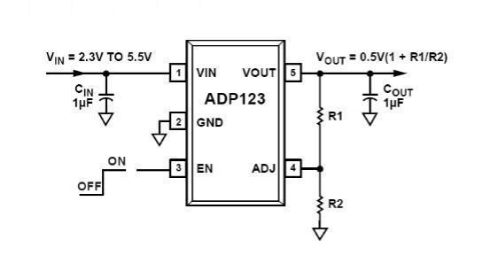
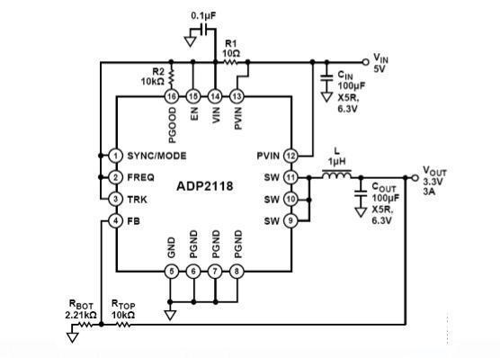
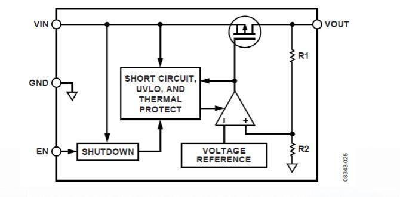

关于电源管理...
电源管理基础知识
每周一次的技术推送又来了哦 😉
01
什么是电源管理?
所有电子系统都需要电源和某种形式的电源管理。 系统电源 需求多种多样，既有简单的3引脚调节器，也有复杂的提供多 路输出的IC电压调节器。 此外，高性能系统可能要求在工作 期间连续监控电源电压和电流。


02
电源和系统管理包括哪些功能？
电源转换产品:低压差调节器、开关调节器、开关控制器
电源开关或负载开关
电源电压监控
电源电压时序控制和跟踪
电池切换器件
热插拔控制器
电源监控器产品：复位控制器、看门狗定时器、多电压 监控器
03
调节器主要性能指标及其意义
1）调节器正常工作的额定电压范围。
2）工厂设置的输出电压及该输出能够提供的最大电流。
3）工厂设置的输出电压的精度，规定为25C时的mV数或输出的百分比。
3）压差是LDO的专用术语，指的是在额定负载电流下，LDO正常工作所需的最小Vin-Vout压差。
4）调节器本身产生的噪声，规定为宽带或峰峰值噪声。
5）调节器抑制输入端较大电压变化，并在输出端产生较小变化的能力。 对于直流输入变化，通常用 dB表示。
6）静态电流是指无负载电流时调节器消耗的电流。关断电流是指调节器禁用或关断时消耗的电流。
04
什么是线性电压调节器？
线性电压调节器是指任何通过消耗方式使电压下降，从而实现调节目的的器件。
1）包括齐纳二极管（或普通二极管）和分流基准电压源
2）通常是一个闭环系统，其中晶体管在其线性区域工作
3）只能降压，不能升压
4）非隔离式输出
5）效率与Vout/Vin成正比（忽略偏置电流损耗）

05
为什么选择线性电压调节器而不是开关调节器？
1）易于使用、三引脚器件
2）较低的输出噪声
3）部分场合下，LDO可以达到类似的效率
4）提供专用型
5) 较低的成本
今日份推送就到这里了哦，
还请大家日常期待下一周！
END
部分知识来源于网络，如有侵权请联系删除
排版：杜遇涵
文字：网 络
图片：网 络